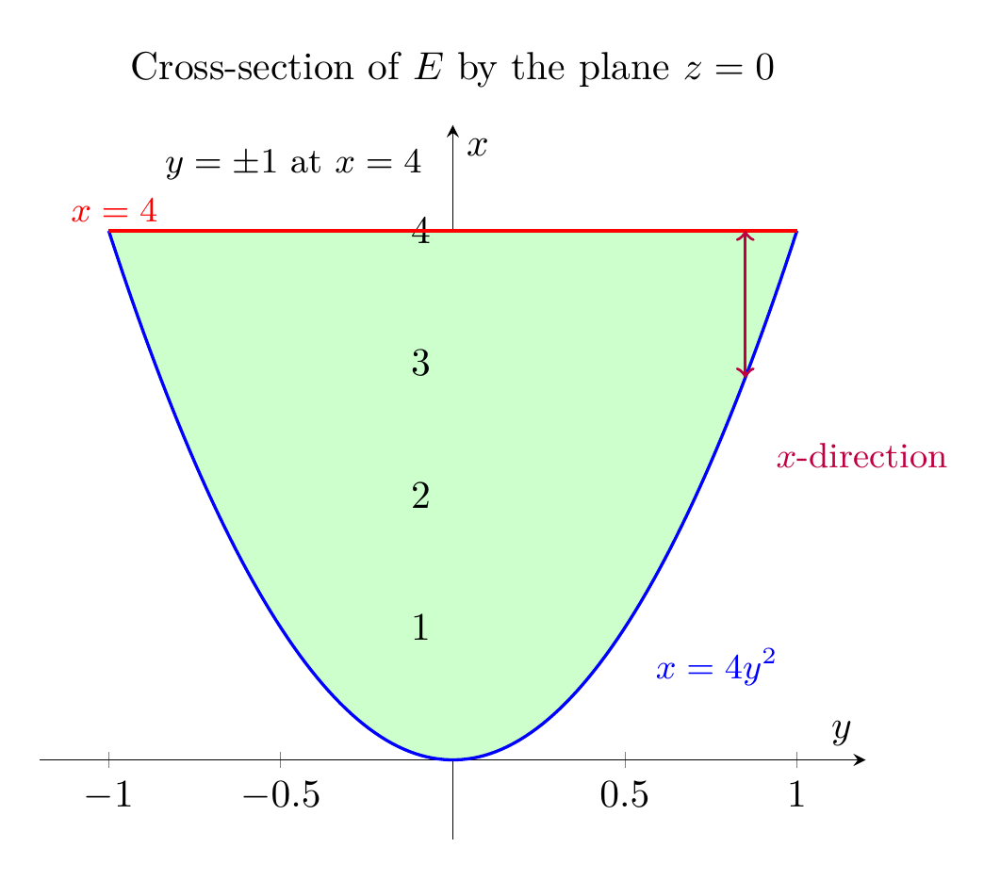

Please solve the problem in the following image.
(Image `20260928_144933_987903_utc_0800_0.png`. Alt text: Image: human_20260928_144933_987903_utc_0800)
20260928_144933_987903_utc_0800_0.png
End of problem
Answer
## Evaluate $\iiint_E x\,dV$
### Step 1. The region
The paraboloid $x=4y^2+4z^2$ opens along the positive $x$-axis with vertex at the origin. It intersects the plane $x=4$ where
$$
4y^2+4z^2=4 \quad\Longleftrightarrow\quad y^2+z^2=1.
$$
Thus the solid is
$$
E=\{(x,y,z): y^2+z^2\le 1,\; 4(y^2+z^2)\le x\le 4\}.
$$
The projection of $E$ onto the $yz$-plane is the unit disk
$$
D=\{(y,z): y^2+z^2\le 1\}.
$$
The boundary surfaces are shown below: the paraboloid, the plane $x=4$, and the circular intersection $y^2+z^2=1$ at $x=4$. The dashed blue circles are cross-sections at $x=1,2,3$.
---
pgfplots_0.png
---
A useful two-dimensional picture is the cross-section by the plane $z=0$. The region becomes
$$
\{(x,y): -1\le y\le 1,\; 4y^2\le x\le 4\}.
$$
This is the region between the parabola $x=4y^2$ and the line $x=4$.
---
\documentclass[border=10pt]{standalone}
\usepackage{pgfplots}
\usepgfplotslibrary{fillbetween}
\pgfplotsset{compat=1.18}
\begin{document}
\begin{tikzpicture}
\begin{axis}[
axis lines=middle,
xlabel=$y$, ylabel=$x$,
xmin=-1.2, xmax=1.2,
ymin=-0.6, ymax=4.8,
width=9cm, height=8cm,
title={Cross-section of $E$ by the plane $z=0$},
clip=false,
]
\addplot[blue, thick, domain=-1:1, samples=120, name path=A] ({x}, {4*x^2});
\addplot[red, thick, domain=-1:1, samples=2, name path=B] ({x}, {4});
\addplot[green!20] fill between[of=A and B];
\node[blue, font=\small, anchor=west] at (axis cs:0.55,0.7) {$x=4y^2$};
\node[red, font=\small, anchor=west] at (axis cs:-1.15,4.15) {$x=4$};
\draw[<->, purple, thick] (axis cs:0.85,4) -- (axis cs:0.85,{4*0.85^2});
\node[purple, font=\small, anchor=west] at (axis cs:0.9,2.3) {$x$-direction};
\node[font=\small, anchor=east] at (axis cs:-0.05,4.5) {$y=\pm1$ at $x=4$};
\end{axis}
\end{tikzpicture}
\end{document}

pgfplots_1.png
---
### Step 2. Integrate in $x$ first (projection method)
For a fixed point $(y,z)\in D$, write $r^2=y^2+z^2$. The variable $x$ runs from the paraboloid to the plane:
$$
4r^2\le x\le 4.
$$
Therefore
$$
\iiint_E x\,dV
=\iint_D\left(\int_{4r^2}^{4}x\,dx\right)dA.
$$
The inner integral is
$$
\int_{4r^2}^{4}x\,dx
=\left[\frac{x^2}{2}\right]_{4r^2}^{4}
=\frac{16}{2}-\frac{(4r^2)^2}{2}
=8-8r^4.
$$
On the disk $D$, use polar coordinates $y=r\cos\theta$, $z=r\sin\theta$, so $dA=r\,dr\,d\theta$ and $0\le r\le 1$, $0\le\theta\le 2\pi$.
---
pgfplots_2.png
---
Thus
$$
\iiint_E x\,dV
=\int_0^{2\pi}\int_0^1 (8-8r^4)\,r\,dr\,d\theta.
$$
The $r$-integral is
$$
\int_0^1 (8r-8r^5)\,dr
=\left[4r^2-\frac{4}{3}r^6\right]_0^1
=4-\frac{4}{3}
=\frac{8}{3}.
$$
Hence
$$
\iiint_E x\,dV
=2\pi\cdot\frac{8}{3}
=\frac{16\pi}{3}.
$$
---
### Step 3. Slicing check (integrating perpendicular to the $x$-axis)
For a fixed $x\in[0,4]$, the cross-section of $E$ is the disk
$$
y^2+z^2\le \frac{x}{4},
$$
which has radius $\sqrt{x/4}$ and area
$$
A(x)=\pi\left(\sqrt{\frac{x}{4}}\right)^2=\frac{\pi x}{4}.
$$
Then
$$
\iiint_E x\,dV
=\int_0^4 x\,A(x)\,dx
=\int_0^4 x\left(\frac{\pi x}{4}\right)dx
=\frac{\pi}{4}\int_0^4 x^2\,dx.
$$
$$
=\frac{\pi}{4}\left[\frac{x^3}{3}\right]_0^4
=\frac{\pi}{4}\cdot\frac{64}{3}
=\frac{16\pi}{3}.
$$
The plot below shows the area under the integrand $f(x)=xA(x)=\frac{\pi x^2}{4}$.
---